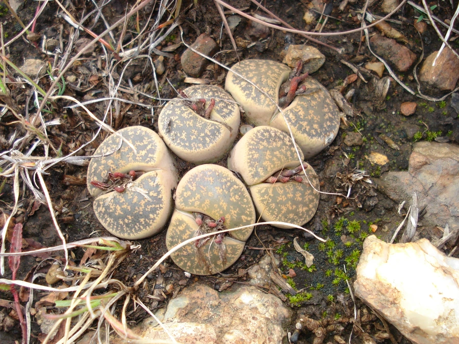

多肉植物 · 植物界
生石花 Lithops lesliei

番杏科小型多肉，球状叶形似石块，顶部有透明“窗”透光，秋季从叶缝中开出黄色花朵，原产南非。
- 分类
- 门被子植物门纲木兰纲目石竹目科番杏科属生石花属
- 栖息环境
- 南非干旱的砾石地与石英质土壤，喜光、耐旱
- 地理分布
- 原产南非开普省及纳米比亚南部，世界各地盆栽栽培
- 保护级别
- 暂无评估
物种志
生石花为番杏科生石花属小型多肉植物，植株由一对肥厚的肉质叶对生组成，形似卵石，高 2–3 厘米，直径 2–4 厘米。叶顶面平坦或微凸，呈灰绿、灰褐或黄褐色，带有斑纹，顶部有透光的“窗”结构。花自两叶中央的裂缝抽出，黄色，直径 2–3 厘米，花期 9–11 月；果实为蒴果，成熟遇水开裂散种。
生石花原产南非的干旱地区，长期演化出拟态石块的形态，以减少被动物发现和啃食，顶部的透明窗还能让光线进入叶肉深层进行光合作用。它每年春季蜕去旧叶、从裂缝中长出新叶，秋季开花，冬季休眠。栽培时需严格控水，尤其在新叶生长期不可浇水，否则容易烂根；盆土以颗粒为主，保持充足光照和良好通风。
形态与习性
- 株高植株高 2–3 厘米，直径 2–4 厘米
- 花期9–11 月，黄色花自叶缝开出
- 果期花后结蒴果，遇水开裂
- 光照喜充足阳光，光照不足易徒长
- 水分严格控水，蜕皮期停水，忌积水
- 土壤颗粒为主、排水良好的矿质土
- 繁殖以播种为主，也可分株
趣味知识
- 生石花的拟态形态能融入砾石环境，减少被食草动物发现的概率。
- 叶顶的透明“窗”可让光线进入叶肉深层，即使不露出地表也能进行光合作用。
- 生石花每年会蜕去旧叶、长出新叶，蜕皮期通常完整断水。
- 它的花通常只在午后开放，傍晚闭合，花期持续约一周。